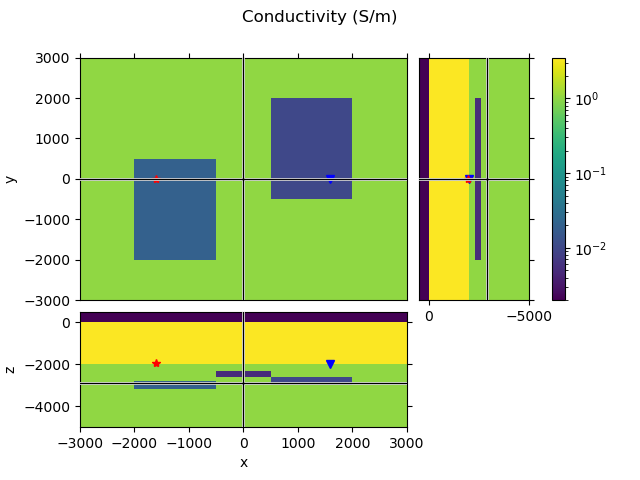
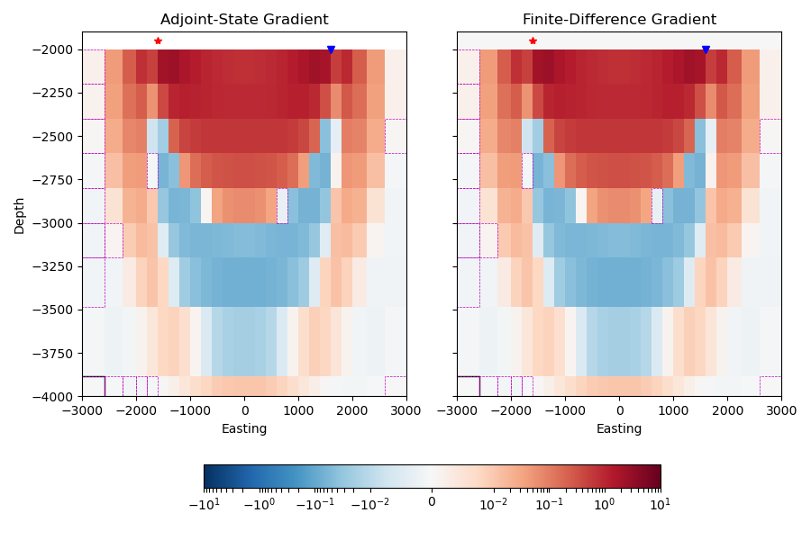

Note
Click here to download the full example code
4. Adjoint-state vs. FD gradient#
The gradient of the misfit function, as implemented in emg3d, uses the
adjoint-state method following [PlMu08] (see
emg3d.simulations.Simulation.gradient). The method has the advantage
that it is very fast. However, it can be tricky to implement and it is always
good to verify the implementation against another method.
We compare in this example the adjoint-state gradient to a simple forward finite-difference gradient. (See 04. Gradient of the misfit function for more details regarding the adjoint-state gradient.)
import emg3d
import itertools
import numpy as np
import matplotlib.pyplot as plt
from matplotlib.patches import Rectangle
from matplotlib.colors import LogNorm, SymLogNorm
1. Create a survey and a simple model#
Create a simple block model and a survey for the comparison.
Survey#
The survey consists of one source, one receiver, both electric, x-directed point-dipoles, where the receiver is on the seafloor and the source 50 m above. Offset is 3.2 km, and acquisition frequency is 1 Hz.
survey = emg3d.surveys.Survey(
name='Gradient Test-Survey',
sources=emg3d.TxElectricDipole((-1600, 0, -1950, 0, 0)),
receivers=emg3d.RxElectricPoint((1600, 0, -2000, 0, 0)),
frequencies=1.0,
noise_floor=1e-15,
relative_error=0.05,
)
Model#
As emg3d internally computes with conductivities we use conductivities to compare the gradient in its purest implementation. Note that if we define our model in terms of resistivities or \(\log_{\{e;10\}}(\{\sigma;\rho\})\), the gradient would look differently.
# Create a simple block model.
hx = np.array([1000, 1500, 1000, 1500, 1000])
hy = np.array([1000, 1500, 1000, 1500, 1000])
hz = np.array([1800., 200., 200., 200., 300., 300., 2000., 500.])
model_grid = emg3d.TensorMesh(
[hx, hy, hz], origin=np.array([-3000, -3000, -5000]))
# Initiate model with conductivities of 1 S/m.
model = emg3d.Model(
model_grid, np.ones(model_grid.n_cells), mapping='Conductivity')
model.property_x[:, :, -1] = 1e-8 # Add air layer.
model.property_x[:, :, -2] = 3.33 # Add seawater layer.
model_bg = model.copy() # Make a copy for the background model.
# Add three blocks.
model.property_x[1, 1:3, 1:3] = 0.02
model.property_x[3, 2:4, 2:4] = 0.01
model.property_x[2, 1:4, 4] = 0.005
QC#
model_grid.plot_3d_slicer(model.property_x.ravel('F'), zslice=-2900,
pcolor_opts={'norm': LogNorm(vmin=0.002, vmax=3.5)})
plt.suptitle('Conductivity (S/m)')
axs = plt.gcf().get_children()
rec_coords = survey.receiver_coordinates()
src_coords = survey.source_coordinates()
axs[1].plot(rec_coords[0], rec_coords[1], 'bv')
axs[2].plot(rec_coords[0], rec_coords[2], 'bv')
axs[3].plot(rec_coords[2], rec_coords[1], 'bv')
axs[1].plot(src_coords[0], src_coords[1], 'r*')
axs[2].plot(src_coords[0], src_coords[2], 'r*')
axs[3].plot(src_coords[2], src_coords[1], 'r*')
plt.show()

Generate synthetic data#
# Gridding options.
gridding_opts = {
'frequency': survey.frequencies['f-1'],
'properties': [3.33, 1, 1, 3.33],
'center': (0, 0, -2000),
'min_width_limits': 100,
'domain': ([-2000, 2000], [-2000, 2000], [-3200, -2000]),
'mapping': model.map,
'center_on_edge': True,
}
data_grid = emg3d.construct_mesh(**gridding_opts)
# Define a simulation for the data.
simulation_data = emg3d.simulations.Simulation(
name='Data for Gradient Test',
survey=survey,
model=model.interpolate_to_grid(data_grid),
gridding='same', # Same grid as for input model.
max_workers=4,
)
# Simulate the data and store them as observed.
simulation_data.compute(observed=True)
# Let's print the survey to check that the observed data are now set.
survey
Compute efields 0/1 [00:00]
Compute efields ########## 1/1 [00:10]
Compute efields ########## 1/1 [00:10]
Adjoint-state gradient#
For the actual comparison we use a very coarse mesh. The reason is that we have to compute an extra forward model for each cell for the forward finite-difference approximation, so we try to keep that number low (even though we only do a cross-section, not the entire cube).
Our computational grid has only 16,384 cells, which should be fast enough to compute the FD gradient of a cross-section in a few minutes. A cross-section along the survey-line has \(32 \times 11 = 352\) cells, so we need to compute an extra 352 forward models. (There are 16 cells in z, but only 11 below the seafloor.)
# Computational grid (min_width 200 instead of 100).
comp_grid_opts = {**gridding_opts, 'min_width_limits': 200}
comp_grid = emg3d.construct_mesh(**comp_grid_opts)
# Interpolate the background model onto the computational grid.
comp_model = model_bg.interpolate_to_grid(comp_grid)
# AS gradient simulation.
simulation_as = emg3d.simulations.Simulation(
name='AS Gradient Test',
survey=survey,
model=comp_model,
gridding='same', # Same grid as for input model.
max_workers=4, # For parallel workers, adjust if you have more.
receiver_interpolation='linear', # For proper adjoint-state gradient
)
simulation_as
# Get the misfit and the gradient of the misfit.
data_misfit = simulation_as.misfit
as_grad = simulation_as.gradient
# Set water and air gradient to NaN for the plots.
as_grad[:, :, comp_grid.cell_centers_z > -2000] = np.nan
Compute efields 0/1 [00:00]
Compute efields ########## 1/1 [00:01]
Compute efields ########## 1/1 [00:01]
Back-propagate 0/1 [00:00]
Back-propagate ########## 1/1 [00:01]
Back-propagate ########## 1/1 [00:01]
Finite-Difference gradient#
To test if the adjoint-state gradient indeed returns the gradient we can compare it to a one-sided finite-difference approximated gradient as given by
Define a fct to compute FD gradient for one cell#
# Define epsilon (some small conductivity value, S/m).
epsilon = 0.0001
# Define the cross-section.
iy = comp_grid.shape_cells[1]//2
def comp_fd_grad(ixiz):
"""Compute forward-FD gradient for one cell."""
# Copy the computational model.
fd_model = comp_model.copy()
# Add conductivity-epsilon to this (ix, iy, iz) cell.
fd_model.property_x[ixiz[0], iy, ixiz[1]] += epsilon
# Create a new simulation with this model
simulation_fd = emg3d.simulations.Simulation(
name='FD Gradient Test',
survey=survey, model=fd_model, gridding='same',
max_workers=1, solver_opts={'verb': 1},
receiver_interpolation='linear', # For proper adjoint-state gradient
)
# Switch-of progress bar in this case
simulation_fd._tqdm_opts['disable'] = True
# Get misfit
fd_data_misfit = simulation_fd.misfit
# Return gradient
return float((fd_data_misfit - data_misfit)/epsilon)
Loop over all required cells#
# Initiate FD gradient.
fd_grad = np.zeros_like(as_grad)
# Get all ix-iz combinations (without air/water).
ixiz = list(itertools.product(
range(comp_grid.shape_cells[0]),
range(len(comp_grid.cell_centers_z[comp_grid.cell_centers_z < -2000])))
)
# Wrap it asynchronously
out = emg3d._multiprocessing.process_map(
comp_fd_grad,
ixiz,
max_workers=4, # Adjust max worker here!
)
# Collect result
for i, (ix, iz) in enumerate(ixiz):
fd_grad[ix, iy, iz] = out[i]
0%| | 0/352 [00:00<?, ?it/s]
0%| | 1/352 [00:02<16:14, 2.78s/it]
1%|1 | 5/352 [00:05<05:55, 1.02s/it]
3%|2 | 9/352 [00:07<04:20, 1.32it/s]
3%|3 | 11/352 [00:07<03:14, 1.75it/s]
4%|3 | 13/352 [00:10<04:06, 1.38it/s]
4%|3 | 14/352 [00:10<03:49, 1.47it/s]
5%|4 | 17/352 [00:12<03:55, 1.42it/s]
5%|5 | 19/352 [00:13<02:55, 1.90it/s]
6%|5 | 21/352 [00:15<04:06, 1.34it/s]
7%|6 | 24/352 [00:15<02:42, 2.02it/s]
7%|7 | 25/352 [00:18<04:20, 1.25it/s]
8%|8 | 29/352 [00:20<03:41, 1.46it/s]
9%|8 | 30/352 [00:20<03:25, 1.57it/s]
9%|8 | 31/352 [00:21<03:01, 1.77it/s]
9%|9 | 33/352 [00:23<03:49, 1.39it/s]
10%|9 | 34/352 [00:23<03:46, 1.40it/s]
11%|# | 37/352 [00:25<03:39, 1.44it/s]
11%|# | 38/352 [00:26<03:43, 1.41it/s]
11%|#1 | 39/352 [00:27<03:26, 1.52it/s]
12%|#1 | 41/352 [00:28<03:26, 1.51it/s]
12%|#1 | 42/352 [00:29<03:32, 1.46it/s]
12%|#2 | 43/352 [00:29<03:32, 1.45it/s]
13%|#2 | 45/352 [00:30<02:59, 1.71it/s]
13%|#3 | 46/352 [00:32<04:01, 1.27it/s]
14%|#3 | 48/352 [00:33<03:13, 1.57it/s]
14%|#3 | 49/352 [00:33<02:43, 1.85it/s]
14%|#4 | 50/352 [00:35<04:17, 1.17it/s]
14%|#4 | 51/352 [00:35<03:33, 1.41it/s]
15%|#4 | 52/352 [00:35<02:51, 1.75it/s]
15%|#5 | 53/352 [00:35<02:20, 2.13it/s]
15%|#5 | 54/352 [00:38<04:52, 1.02it/s]
16%|#5 | 56/352 [00:38<03:16, 1.51it/s]
16%|#6 | 58/352 [00:40<03:55, 1.25it/s]
17%|#6 | 59/352 [00:40<03:10, 1.54it/s]
17%|#7 | 60/352 [00:40<02:32, 1.91it/s]
18%|#7 | 62/352 [00:43<04:09, 1.16it/s]
18%|#8 | 64/352 [00:43<02:51, 1.68it/s]
19%|#8 | 66/352 [00:46<03:39, 1.30it/s]
19%|#9 | 67/352 [00:46<03:05, 1.53it/s]
20%|#9 | 69/352 [00:46<02:11, 2.15it/s]
20%|#9 | 70/352 [00:48<03:49, 1.23it/s]
20%|## | 71/352 [00:49<03:29, 1.34it/s]
21%|##1 | 74/352 [00:51<03:20, 1.38it/s]
22%|##1 | 76/352 [00:52<02:52, 1.60it/s]
22%|##2 | 78/352 [00:53<03:11, 1.43it/s]
22%|##2 | 79/352 [00:54<02:51, 1.59it/s]
23%|##2 | 80/352 [00:54<02:42, 1.68it/s]
23%|##3 | 81/352 [00:54<02:20, 1.93it/s]
23%|##3 | 82/352 [00:56<03:27, 1.30it/s]
24%|##3 | 83/352 [00:56<02:54, 1.54it/s]
24%|##3 | 84/352 [00:57<02:56, 1.52it/s]
24%|##4 | 85/352 [00:57<02:18, 1.93it/s]
24%|##4 | 86/352 [00:59<03:30, 1.27it/s]
25%|##4 | 87/352 [00:59<03:10, 1.39it/s]
25%|##5 | 88/352 [01:00<03:19, 1.32it/s]
25%|##5 | 89/352 [01:00<02:48, 1.56it/s]
26%|##5 | 90/352 [01:02<03:44, 1.17it/s]
26%|##5 | 91/352 [01:02<02:48, 1.55it/s]
26%|##6 | 92/352 [01:03<03:42, 1.17it/s]
26%|##6 | 93/352 [01:03<02:49, 1.53it/s]
27%|##6 | 94/352 [01:05<04:26, 1.03s/it]
27%|##7 | 96/352 [01:06<03:08, 1.36it/s]
28%|##7 | 97/352 [01:07<03:23, 1.25it/s]
28%|##7 | 98/352 [01:08<03:48, 1.11it/s]
28%|##8 | 100/352 [01:08<02:20, 1.79it/s]
29%|##8 | 101/352 [01:10<03:15, 1.28it/s]
29%|##8 | 102/352 [01:10<02:42, 1.54it/s]
29%|##9 | 103/352 [01:11<02:42, 1.53it/s]
30%|##9 | 104/352 [01:11<02:24, 1.71it/s]
30%|##9 | 105/352 [01:13<03:26, 1.19it/s]
30%|### | 106/352 [01:13<02:49, 1.45it/s]
30%|### | 107/352 [01:13<02:09, 1.90it/s]
31%|### | 108/352 [01:15<03:11, 1.27it/s]
31%|### | 109/352 [01:15<03:08, 1.29it/s]
31%|###1 | 110/352 [01:16<02:56, 1.37it/s]
32%|###1 | 111/352 [01:17<02:38, 1.52it/s]
32%|###1 | 112/352 [01:18<03:14, 1.23it/s]
32%|###2 | 113/352 [01:18<02:45, 1.44it/s]
32%|###2 | 114/352 [01:19<03:19, 1.19it/s]
33%|###2 | 115/352 [01:19<02:27, 1.60it/s]
33%|###2 | 116/352 [01:21<03:39, 1.08it/s]
34%|###3 | 118/352 [01:22<03:10, 1.23it/s]
34%|###3 | 119/352 [01:23<02:41, 1.44it/s]
34%|###4 | 120/352 [01:24<02:48, 1.37it/s]
34%|###4 | 121/352 [01:24<02:58, 1.29it/s]
35%|###4 | 122/352 [01:25<03:03, 1.25it/s]
35%|###4 | 123/352 [01:26<02:31, 1.51it/s]
35%|###5 | 124/352 [01:27<02:48, 1.35it/s]
36%|###5 | 125/352 [01:27<02:37, 1.44it/s]
36%|###5 | 126/352 [01:28<02:30, 1.50it/s]
36%|###6 | 127/352 [01:28<01:58, 1.90it/s]
36%|###6 | 128/352 [01:29<02:58, 1.25it/s]
37%|###6 | 129/352 [01:30<02:30, 1.49it/s]
37%|###6 | 130/352 [01:30<02:31, 1.46it/s]
37%|###7 | 131/352 [01:31<02:01, 1.82it/s]
38%|###7 | 132/352 [01:32<02:42, 1.36it/s]
38%|###7 | 133/352 [01:32<02:29, 1.46it/s]
38%|###8 | 134/352 [01:33<02:36, 1.40it/s]
38%|###8 | 135/352 [01:34<02:13, 1.62it/s]
39%|###8 | 136/352 [01:35<02:32, 1.41it/s]
39%|###8 | 137/352 [01:35<02:45, 1.30it/s]
39%|###9 | 138/352 [01:36<02:32, 1.40it/s]
39%|###9 | 139/352 [01:36<01:59, 1.79it/s]
40%|###9 | 140/352 [01:37<02:35, 1.36it/s]
40%|#### | 141/352 [01:38<02:25, 1.45it/s]
40%|#### | 142/352 [01:38<02:15, 1.55it/s]
41%|#### | 143/352 [01:39<02:10, 1.60it/s]
41%|#### | 144/352 [01:40<02:34, 1.34it/s]
41%|####1 | 145/352 [01:41<02:53, 1.19it/s]
42%|####1 | 147/352 [01:42<01:59, 1.71it/s]
42%|####2 | 148/352 [01:43<02:20, 1.45it/s]
42%|####2 | 149/352 [01:43<02:23, 1.42it/s]
43%|####2 | 150/352 [01:44<02:02, 1.64it/s]
43%|####2 | 151/352 [01:44<01:54, 1.76it/s]
43%|####3 | 152/352 [01:46<02:45, 1.21it/s]
43%|####3 | 153/352 [01:46<02:23, 1.38it/s]
44%|####3 | 154/352 [01:47<02:09, 1.53it/s]
44%|####4 | 155/352 [01:47<01:39, 1.98it/s]
44%|####4 | 156/352 [01:48<02:42, 1.21it/s]
45%|####4 | 157/352 [01:49<02:51, 1.14it/s]
45%|####5 | 159/352 [01:50<01:39, 1.93it/s]
45%|####5 | 160/352 [01:52<02:47, 1.14it/s]
46%|####5 | 161/352 [01:52<02:28, 1.28it/s]
47%|####6 | 164/352 [01:54<02:22, 1.32it/s]
47%|####6 | 165/352 [01:55<02:00, 1.55it/s]
48%|####7 | 168/352 [01:57<02:06, 1.45it/s]
48%|####8 | 170/352 [01:57<01:33, 1.95it/s]
49%|####8 | 171/352 [01:57<01:27, 2.07it/s]
49%|####8 | 172/352 [02:00<02:32, 1.18it/s]
50%|####9 | 175/352 [02:00<01:34, 1.86it/s]
50%|##### | 176/352 [02:03<02:39, 1.11it/s]
51%|#####1 | 180/352 [02:05<02:01, 1.41it/s]
51%|#####1 | 181/352 [02:05<01:57, 1.45it/s]
52%|#####1 | 183/352 [02:06<01:34, 1.78it/s]
52%|#####2 | 184/352 [02:07<02:01, 1.38it/s]
53%|#####2 | 185/352 [02:08<01:58, 1.41it/s]
53%|#####2 | 186/352 [02:08<01:38, 1.68it/s]
53%|#####3 | 187/352 [02:09<01:27, 1.89it/s]
53%|#####3 | 188/352 [02:10<02:10, 1.26it/s]
54%|#####3 | 189/352 [02:11<02:04, 1.31it/s]
54%|#####4 | 191/352 [02:11<01:30, 1.78it/s]
55%|#####4 | 192/352 [02:13<02:06, 1.26it/s]
55%|#####4 | 193/352 [02:14<01:57, 1.36it/s]
55%|#####5 | 195/352 [02:14<01:17, 2.01it/s]
56%|#####5 | 196/352 [02:15<01:59, 1.31it/s]
56%|#####5 | 197/352 [02:16<01:46, 1.45it/s]
56%|#####6 | 198/352 [02:16<01:28, 1.75it/s]
57%|#####6 | 199/352 [02:17<01:23, 1.82it/s]
57%|#####6 | 200/352 [02:18<01:54, 1.33it/s]
57%|#####7 | 201/352 [02:19<01:48, 1.39it/s]
57%|#####7 | 202/352 [02:19<01:22, 1.81it/s]
58%|#####7 | 203/352 [02:19<01:19, 1.87it/s]
58%|#####7 | 204/352 [02:21<02:02, 1.20it/s]
58%|#####8 | 205/352 [02:22<02:12, 1.11it/s]
59%|#####8 | 206/352 [02:22<01:41, 1.43it/s]
59%|#####8 | 207/352 [02:22<01:24, 1.72it/s]
59%|#####9 | 208/352 [02:24<02:09, 1.12it/s]
59%|#####9 | 209/352 [02:25<02:00, 1.19it/s]
60%|#####9 | 211/352 [02:25<01:17, 1.81it/s]
60%|###### | 212/352 [02:27<02:01, 1.15it/s]
61%|###### | 214/352 [02:27<01:24, 1.62it/s]
61%|######1 | 216/352 [02:30<01:48, 1.25it/s]
62%|######1 | 218/352 [02:30<01:20, 1.66it/s]
62%|######2 | 219/352 [02:31<01:13, 1.82it/s]
62%|######2 | 220/352 [02:32<01:51, 1.19it/s]
63%|######3 | 222/352 [02:33<01:20, 1.62it/s]
64%|######3 | 224/352 [02:35<01:38, 1.30it/s]
64%|######4 | 226/352 [02:36<01:17, 1.62it/s]
65%|######4 | 228/352 [02:37<01:27, 1.42it/s]
65%|######5 | 229/352 [02:38<01:21, 1.52it/s]
65%|######5 | 230/352 [02:38<01:13, 1.67it/s]
66%|######5 | 232/352 [02:40<01:29, 1.35it/s]
66%|######6 | 234/352 [02:41<01:06, 1.77it/s]
67%|######6 | 235/352 [02:41<01:07, 1.72it/s]
67%|######7 | 236/352 [02:43<01:25, 1.35it/s]
67%|######7 | 237/352 [02:43<01:15, 1.52it/s]
68%|######7 | 238/352 [02:44<01:12, 1.58it/s]
68%|######7 | 239/352 [02:44<01:10, 1.61it/s]
68%|######8 | 240/352 [02:45<01:13, 1.53it/s]
68%|######8 | 241/352 [02:46<01:20, 1.37it/s]
69%|######8 | 242/352 [02:46<01:11, 1.54it/s]
69%|######9 | 243/352 [02:47<01:00, 1.79it/s]
69%|######9 | 244/352 [02:48<01:18, 1.37it/s]
70%|######9 | 245/352 [02:49<01:25, 1.25it/s]
70%|######9 | 246/352 [02:49<01:03, 1.68it/s]
70%|####### | 247/352 [02:49<00:56, 1.87it/s]
70%|####### | 248/352 [02:50<01:16, 1.36it/s]
71%|####### | 249/352 [02:51<01:21, 1.27it/s]
71%|#######1 | 251/352 [02:52<00:52, 1.93it/s]
72%|#######1 | 252/352 [02:53<01:11, 1.40it/s]
72%|#######1 | 253/352 [02:54<01:16, 1.29it/s]
72%|#######2 | 255/352 [02:54<00:52, 1.86it/s]
73%|#######2 | 256/352 [02:56<01:06, 1.45it/s]
73%|#######3 | 257/352 [02:56<00:58, 1.63it/s]
73%|#######3 | 258/352 [02:56<00:47, 2.00it/s]
74%|#######3 | 259/352 [02:57<01:01, 1.51it/s]
74%|#######3 | 260/352 [02:58<01:01, 1.49it/s]
74%|#######4 | 261/352 [02:59<01:00, 1.51it/s]
75%|#######4 | 263/352 [03:00<01:03, 1.41it/s]
75%|#######5 | 264/352 [03:01<00:55, 1.60it/s]
75%|#######5 | 265/352 [03:01<00:57, 1.50it/s]
76%|#######5 | 267/352 [03:03<01:02, 1.35it/s]
76%|#######6 | 268/352 [03:03<00:52, 1.60it/s]
76%|#######6 | 269/352 [03:03<00:42, 1.97it/s]
77%|#######6 | 270/352 [03:04<00:47, 1.71it/s]
77%|#######6 | 271/352 [03:06<01:13, 1.10it/s]
78%|#######7 | 274/352 [03:07<00:44, 1.75it/s]
78%|#######8 | 275/352 [03:08<00:51, 1.49it/s]
78%|#######8 | 276/352 [03:09<00:58, 1.30it/s]
79%|#######8 | 278/352 [03:09<00:38, 1.93it/s]
79%|#######9 | 279/352 [03:10<00:48, 1.50it/s]
80%|#######9 | 280/352 [03:11<00:45, 1.58it/s]
80%|#######9 | 281/352 [03:11<00:42, 1.68it/s]
80%|######## | 282/352 [03:12<00:37, 1.85it/s]
80%|######## | 283/352 [03:13<00:49, 1.38it/s]
81%|######## | 284/352 [03:14<00:46, 1.47it/s]
81%|######## | 285/352 [03:14<00:41, 1.62it/s]
81%|########1 | 286/352 [03:15<00:37, 1.75it/s]
82%|########1 | 287/352 [03:15<00:44, 1.45it/s]
82%|########1 | 288/352 [03:16<00:44, 1.43it/s]
82%|########2 | 289/352 [03:17<00:40, 1.56it/s]
82%|########2 | 290/352 [03:18<00:45, 1.36it/s]
83%|########2 | 291/352 [03:19<00:48, 1.26it/s]
83%|########2 | 292/352 [03:19<00:39, 1.52it/s]
83%|########3 | 293/352 [03:20<00:41, 1.43it/s]
84%|########3 | 294/352 [03:20<00:36, 1.60it/s]
84%|########3 | 295/352 [03:21<00:45, 1.26it/s]
84%|########4 | 296/352 [03:22<00:41, 1.36it/s]
84%|########4 | 297/352 [03:23<00:48, 1.14it/s]
85%|########4 | 298/352 [03:23<00:38, 1.42it/s]
85%|########4 | 299/352 [03:25<00:45, 1.16it/s]
85%|########5 | 300/352 [03:25<00:38, 1.35it/s]
86%|########5 | 301/352 [03:26<00:36, 1.40it/s]
86%|########5 | 302/352 [03:27<00:37, 1.34it/s]
86%|########6 | 303/352 [03:27<00:33, 1.48it/s]
86%|########6 | 304/352 [03:28<00:33, 1.45it/s]
87%|########6 | 305/352 [03:29<00:36, 1.28it/s]
87%|########6 | 306/352 [03:30<00:35, 1.28it/s]
87%|########7 | 307/352 [03:30<00:27, 1.61it/s]
88%|########7 | 308/352 [03:30<00:25, 1.70it/s]
88%|########7 | 309/352 [03:31<00:30, 1.40it/s]
88%|########8 | 310/352 [03:32<00:33, 1.25it/s]
89%|########8 | 312/352 [03:33<00:24, 1.65it/s]
89%|########8 | 313/352 [03:34<00:29, 1.33it/s]
89%|########9 | 314/352 [03:35<00:23, 1.59it/s]
90%|########9 | 316/352 [03:36<00:21, 1.68it/s]
90%|######### | 317/352 [03:37<00:27, 1.26it/s]
90%|######### | 318/352 [03:37<00:22, 1.53it/s]
91%|######### | 319/352 [03:38<00:16, 1.96it/s]
91%|######### | 320/352 [03:38<00:18, 1.75it/s]
91%|#########1| 321/352 [03:40<00:26, 1.18it/s]
91%|#########1| 322/352 [03:40<00:20, 1.49it/s]
92%|#########1| 323/352 [03:40<00:15, 1.93it/s]
92%|#########2| 324/352 [03:41<00:17, 1.59it/s]
92%|#########2| 325/352 [03:43<00:25, 1.07it/s]
93%|#########2| 327/352 [03:43<00:13, 1.80it/s]
93%|#########3| 328/352 [03:44<00:15, 1.57it/s]
93%|#########3| 329/352 [03:45<00:18, 1.26it/s]
94%|#########3| 330/352 [03:46<00:15, 1.41it/s]
94%|#########4| 332/352 [03:46<00:11, 1.78it/s]
95%|#########4| 333/352 [03:48<00:14, 1.27it/s]
95%|#########4| 334/352 [03:48<00:11, 1.61it/s]
95%|#########5| 335/352 [03:48<00:08, 2.04it/s]
95%|#########5| 336/352 [03:49<00:08, 1.84it/s]
96%|#########5| 337/352 [03:50<00:12, 1.19it/s]
96%|#########6| 338/352 [03:51<00:09, 1.43it/s]
97%|#########6| 340/352 [03:52<00:07, 1.52it/s]
97%|#########6| 341/352 [03:54<00:10, 1.08it/s]
97%|#########7| 343/352 [03:54<00:05, 1.68it/s]
98%|#########7| 344/352 [03:55<00:04, 1.60it/s]
98%|#########8| 345/352 [03:56<00:05, 1.23it/s]
98%|#########8| 346/352 [03:56<00:04, 1.43it/s]
99%|#########8| 347/352 [03:57<00:02, 1.84it/s]
99%|#########8| 348/352 [03:57<00:02, 1.86it/s]
99%|#########9| 349/352 [03:59<00:02, 1.24it/s]
99%|#########9| 350/352 [03:59<00:01, 1.43it/s]
100%|##########| 352/352 [03:59<00:00, 2.02it/s]
100%|##########| 352/352 [03:59<00:00, 1.47it/s]
Compare the two gradients#
# Compute NRMSD between AS and FD (%).
nrmsd = 200*abs(as_grad-fd_grad)/(abs(as_grad)+abs(fd_grad))
nrmsd[fd_grad == 0] = np.nan
# Compute sign.
tiny = np.finfo(float).tiny # Avoid division by zero.
diff_sign = np.sign(as_grad/np.where(abs(fd_grad) < tiny, tiny, fd_grad))
def plot_diff(ax, diff):
"""Helper routine to show cells of big NRMSD or different sign."""
for ix in range(comp_grid.h[0].size):
for iz in range(comp_grid.h[2].size):
if diff_sign[ix, iy, iz] < 0:
ax.add_patch(
Rectangle(
(comp_grid.nodes_x[ix], comp_grid.nodes_z[iz]),
comp_grid.h[0][ix], comp_grid.h[2][iz], fill=False,
color='k', lw=1))
if nrmsd[ix, iy, iz] >= diff:
ax.add_patch(
Rectangle(
(comp_grid.nodes_x[ix], comp_grid.nodes_z[iz]),
comp_grid.h[0][ix], comp_grid.h[2][iz], fill=False,
color='m', linestyle='--', lw=0.5))
def set_axis(axs, i):
"""Helper routine to adjust subplots."""
# Show source and receiver.
axs[i].plot(rec_coords[0], rec_coords[2], 'bv')
axs[i].plot(src_coords[0], src_coords[2], 'r*')
# x-label.
axs[i].set_xlabel('Easting')
# y-label depending on column.
if i == 0:
axs[i].set_ylabel('Depth')
else:
axs[i].set_ylabel('')
axs[i].axes.yaxis.set_ticklabels([])
# Set limits.
axs[i].set_xlim(-3000, 3000)
axs[i].set_ylim(-4000, -1900)
# Plotting options.
vmin, vmax = 1e-2, 1e1
pcolor_opts = {'cmap': 'RdBu_r',
'norm': SymLogNorm(linthresh=vmin, base=10,
vmin=-vmax, vmax=vmax)}
fig, axs = plt.subplots(figsize=(9, 6), nrows=1, ncols=2)
# Adjoint-State Gradient
f0 = comp_grid.plot_slice(as_grad, normal='Y', ind=iy, ax=axs[0],
pcolor_opts=pcolor_opts)
axs[0].set_title("Adjoint-State Gradient")
set_axis(axs, 0)
plot_diff(axs[0], 1)
# Finite-Difference Gradient
f1 = comp_grid.plot_slice(fd_grad, normal='Y', ind=iy, ax=axs[1],
pcolor_opts=pcolor_opts)
axs[1].set_title("Finite-Difference Gradient")
set_axis(axs, 1)
plot_diff(axs[1], 1)
plt.tight_layout()
fig.colorbar(f0[0], ax=axs, orientation='horizontal', fraction=0.05)
plt.show()

Visually the two gradients are almost identical. This is amazing, given that the adjoint-state gradient requires one (1) extra forward computation for the entire cube, whereas the finite-difference gradient requires one extra forward computation for each cell, for this cross-section 352 (!).
There are differences, and they are highlighted:
Cells surrounded by a dashed, magenta line: NRMSD is bigger than 1 %.
Cells surrounded by a black line: The two gradients have different signs.
These differences only happen where the amplitude of the gradient is very small, and it therefore blows the NRMSD numerically up (inherit problem of the relative error when the signal approaches zero).
Total running time of the script: ( 4 minutes 18.469 seconds)
Estimated memory usage: 28 MB